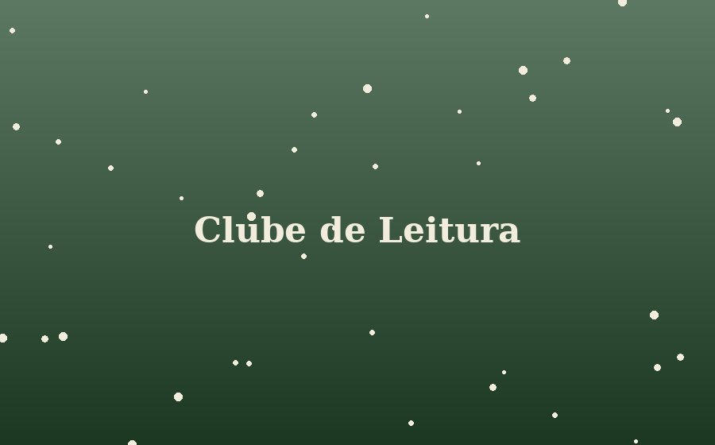

Clube de Leitura — O Rio Sem Margens
Encontro mensal para discutir o romance de Marina Tavares. Não é preciso ter terminado o livro para participar — só trazer vontade de conversar. Vagas limitadas a 15 pessoas, com inscrição no balcão ou pelo telefone da loja.